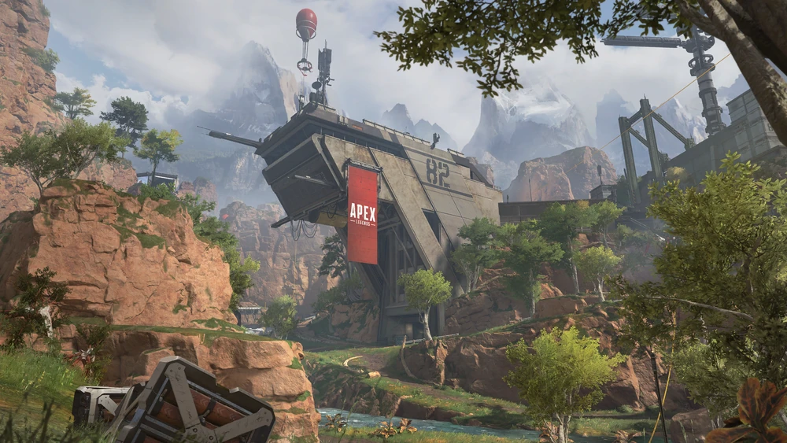
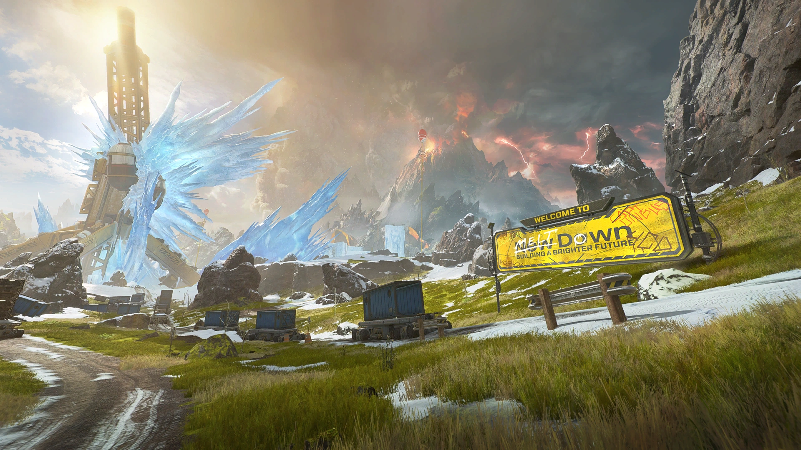
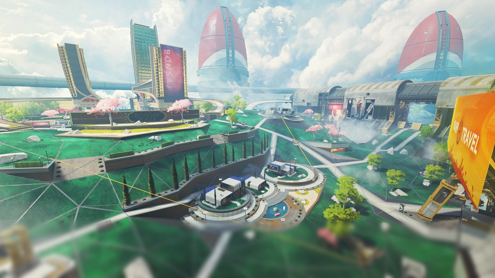
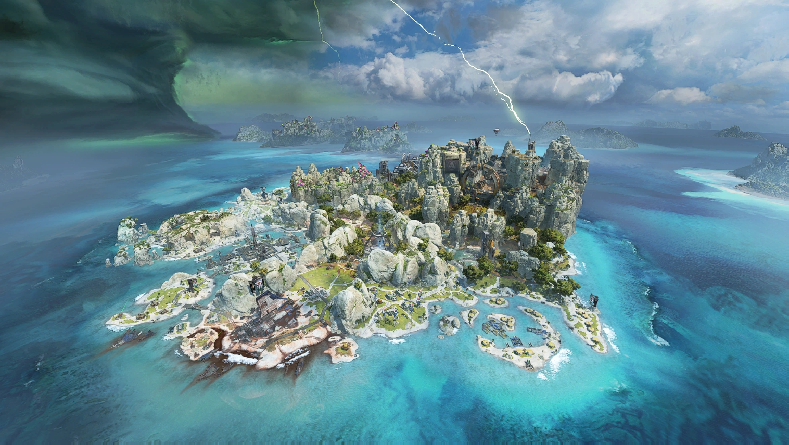

DISCOVER THE MAPS OF THE APEX GAMES
Kings Canyon, World’s Edge, and Olympus. You’ve fought there, you’ve died there, but do you know why they were chosen? Hammond Robotics and the Mercenary Syndicate seem to have a hand in everything that shapes the destiny of the Outlands... Learn more about the maps that host the Apex Games.
Kings Canyon
Once a simple settlement on the planet Solace dating back to the earliest expeditions to the Frontier, the island that is known as Kings Canyon, didn't thrive until a century later when the now-defunct IMC chose it as a hub for research and development. It housed an airbase, a water treatment plant, and a plethora of other facilities to support the IMC’s operations - operations like a highly classified project on the function of Phase tech, or a radical program to create a simulacra army powered by a single brain. But on the surface, Kings Canyon seemed like a simple IMC installation that, for all its faults, brought stability and jobs to Solace.
To blow off steam, IMC soldiers station here would compete in gladiator-esque combat in an area they nicknamed 'Thunderdome'. Years later, when the Syndicate commissioned the rebuilding of the island of Kings Canyon as the home of their newest bloodsport, they insisted Thunderdome remain untouched - a tribute to the earliest known predecessor of what we know today as 'The Apex Games'.
Kings Canyon

World's Edge
A harsh planet beset by intense volcanic activity, Talos was once deemed uninhabitable, and only small luddite settlements took root there. However, it became a hotbed of IMC activity when a rare mineral compound was discovered beneath its surface. Heat-reducing towers were built to super-cool its natural lava flows to allow resource extraction - the facility that housed them was optimistically dubbed “New Dawn”, and the town of World’s Edge grew around it.
Decades ago, an explosion in one of the towers covered the surrounding area in a lethal flash freeze. World’s Edge was abandoned, its only remaining inhabitants a small community of hunters who once spurned modern technology (but tentatively accepted it again under the guidance of their beloved local hero, Bloodhound). However, its ruins and the planet’s energy-rich soil drew the attention of two critical groups: the Mercenary Syndicate and Hammond Robotics. After the Repulsor attack on King's Canyon and the various attempts to rebuild it proved too much trouble than they were worth, World’s Edge became the second home of the Apex Games and a key operational center for Hammond Robotics.
World's Edge

Olympus
Olympus was a city built on dreams. Built in 2640 by billionaire humanitarian Lillian Peck, this utopia floating in clouds above Psamathe was once a place where the brightest minds in the Outlands could gather and exchange ideas, leading to breakthroughs in the sciences and arts. Olympus produced a number of breakthroughs for the Outlands including developments in eco-friendly Jump Drives for short-distance vessels, a Phase Technology for immediate transportation called the Phase Runner, and drone technology for health and security systems.
All dreams come to an end however, and this one ended explosively: the Phase Runner accident in an experimental research facility led to the creation of the Phase Rift (a massive bubble of Phase energy), and the Outlands’ best and brightest quickly abandoned the city.
However, Olympus itself was maintained by advanced computer systems, so it quickly found new buyers in the Outlands’ elite. For 40 years, it served as a lavish vacation spot with the Rift as a tourist attraction. Unfortunately, the Rift grew unstable overtime, and Olympus was fully evacuated six months ago. Now Hammond Robotics, with the support of the Mercenary Syndicate, has transformed Olympus into a new stage for the Apex Games – though why is anyone’s guess.
Olympus

Storm Point
This deserted island wasn't always so deserted. Part of the New Antillia Archipelago, this beautiful island teeming with plentiful resources was one of the first places where early IMC expeditions made landfall on the planet Gaea. However, the area was isolated and beset by tropical storms. A permanent settlement was established on a nearby coastline – today known as the city of Suotamo – and power-generating storm catchers were built on Storm Point to meet the growing city’s energy needs.
When the IMC pulled out of the Outlands, the storm catchers fell into disrepair. Eventually, one finally stopped working – but not on its own. It had been pulled down, and its absence exacerbated the storm that surrounded the island. A survey of the area revealed the remains of several unique settlements built across the centuries, but no survivors. One such settlement was erected around 2716, after the IMS Hestia-01, an IMC vessel, crash-landed on the southern tip of the island. The people of Gaea abandoned the island for many years, apart from the occasional scavenger or pirate group that attempted to loot what was left behind. Until, of course, it caught the eye of the Mercenary Syndicate, who saw it as a perfect location for the Apex Games.
Storm Point

Broken Moon
In 2708, a comet collided with Boreas's moon Cleo, shattering its surface. Many blamed this catastrophic event on a "cursed child" that was born at the same time and had therefore fulfilled a local folktale. This impact had catastrophic effects on Boreas's environment, such as regular meteor showers, tidal irregularities, and drastic temperature changes at the poles and equator. Many scientists agreed that a lack of action would result in Boreas becoming uninhabitable by 2778.
In order to prevent this, the Cleo Recovery Council was founded under the sponsorship of the Boreas Science Division. The CRC began a terraforming operation in an attempt to reverse the damages, primarily using ferrofluid to patch the moon's surface. To reach this end, the colony of Hope was established in 2712. They were able to restore Cleo's habitability by 2715. A variety of useful structures were erected to support the settlement, including greenhouse arrays, research facilities, and a ferrofluid refinery. Additionally, a stasis net array was used to deflect falling debris from Boreas and Cleo, and Atmostations were erected to create a breathable atmosphere. A memorial garden was also developed in memory of the Lymantria Fallout Collision, where debris from Cleo's surface destroyed the cities of Asteria and Nku on Boreas.
In 2734, after declining funding and public interest, as well as the actions of Obi Edolasim after a disastrous interview, the National Alliance of Boreas entered into an agreement with the Mercenary Syndicate to use Hope as an arena for the Apex Games in order to bring in further funds for colonization and restoration. The services of the CRC were terminated as a result. Edolasim had not intended for this, however, as his intention was for the arena to be constructed on Boreas's surface.